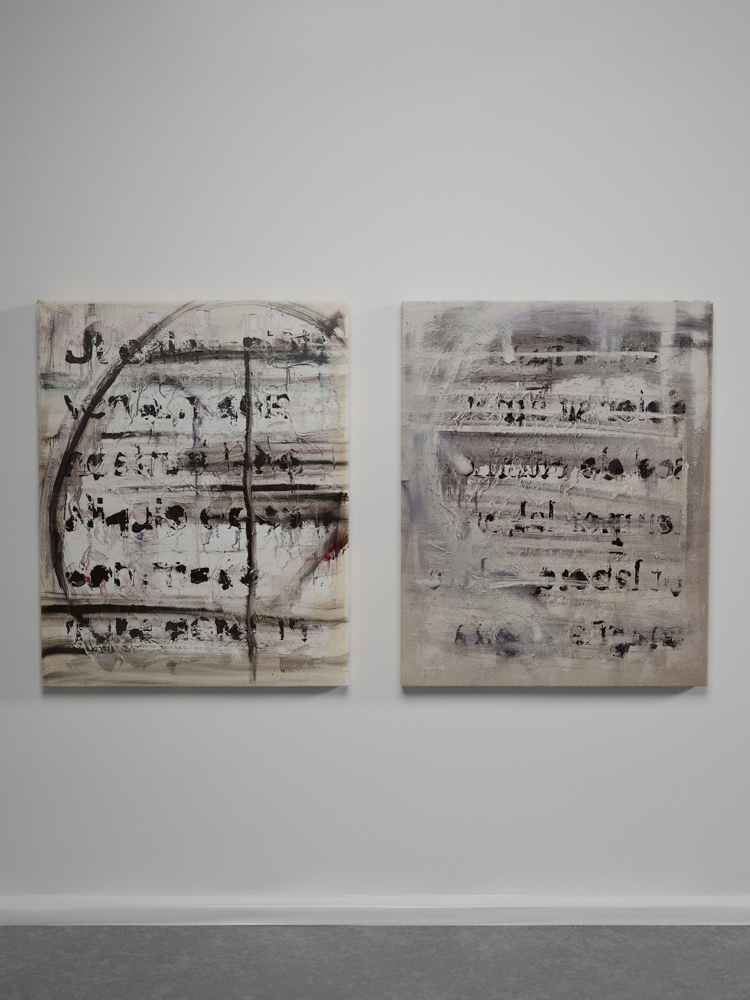
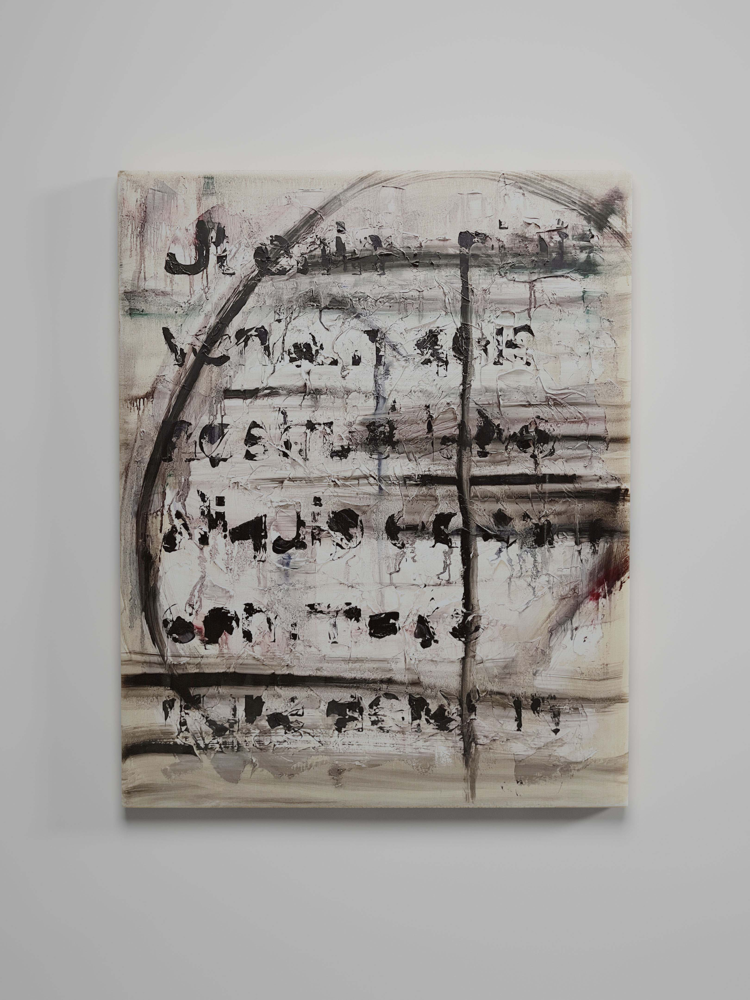
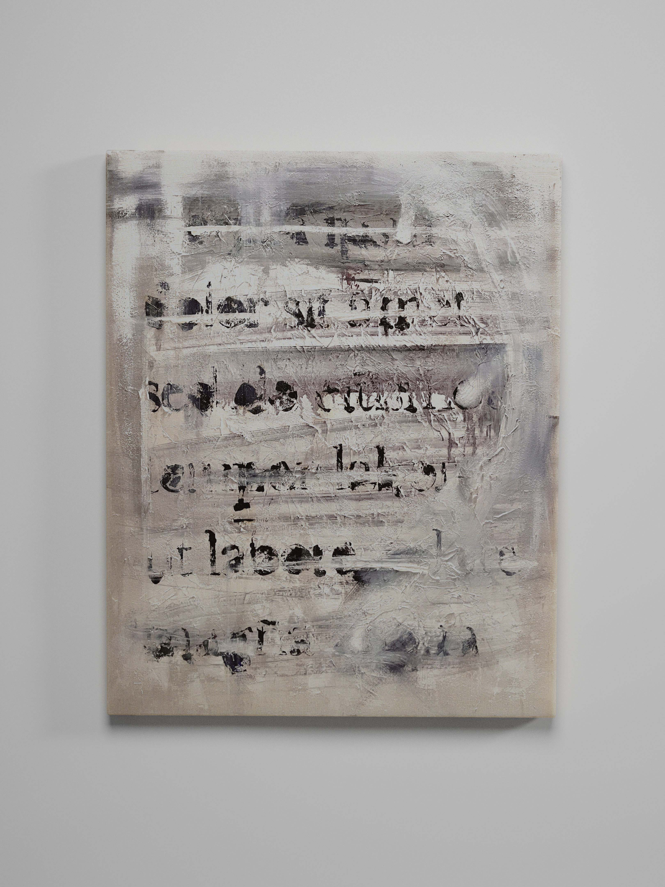

-
- ../2020/Limits of Language: Morphology
- oil on canvas,diptych, 80 x 100cm
- Latin: sensus, sens-us m.
English: feeling/perception/sense/emotion
Oil on cotton canvas
“What can be said it can be said clearly and where of we cannot speak, we must remain silent”—Ludwig Wittgenstein, Tractatus
This diptych serves as an abstract visual treatise on the limits of language. Referencing the works and theories Ludwig Wittgenstein, the work reminds us to question what will
interpret the way transcendence translates into our world. Doubtless, the limits of language limits mankind. We must thus succumb to our fate that the metaphysical or noumenal is beyond our grasp and simply experience what is before us.
The entire piece is an abstraction of basic textural forms, shapes, dots, and gestural marks. Using the process of abstract addition and subtraction, I finely manipulate the balance of negative and positive space, depicted in the left (positive space; black) and the right (negative space; white) canvas, and deconstruct type into its basic form, and discover the essence of typography/morphology in the process.


